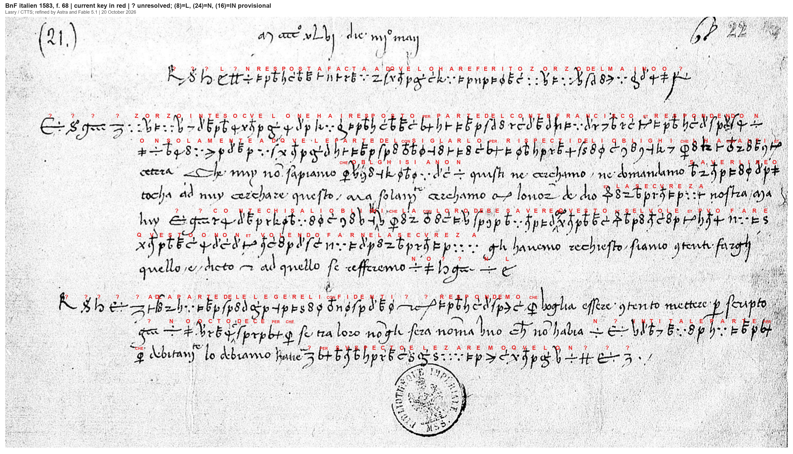
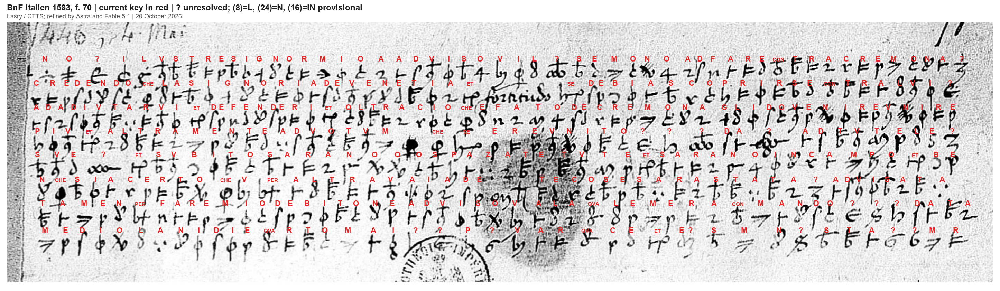
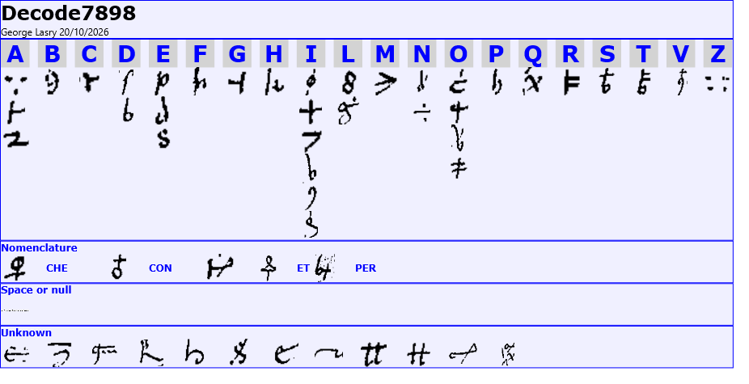

Two letters dated 4 May 1446 in BnF italien 1583 share the same cipher: a reply concerning Zorzo del Maino’s report (f. 68, DECODE R7898) and a letter catalogued as Vincenzo Amidani to Francesco Sforza (f. 70, photographed in DECODE R7899, image P1). Their decipherment is almost complete.
Transcribed by George Lasry with CTTS (CrypTool Transcriber and Solver), who also generated the initial key; the key and reading were improved by Astra and Fable 5.1.
The ciphertexts contain 827 signs drawn from 65 symbol types. The shared key covers 94.3% of the signs.
Both letters use a shared homophonic cipher: several different signs can represent the same letter, while other signs stand for common words or letter groups such as CHE, CON, PER and QVA. Cipher passages are interspersed with ordinary Italian writing. Most of the remaining unknown signs are probably nulls, titles or abbreviations, though their individual meanings remain uncertain.
First letter — f. 68 / R7898. Unidentified sender to Zorzo del Maino; 4 May 1446; place of dispatch unknown.
The writer replies to Maino’s report concerning Count Francesco, probably Francesco Sforza. The discussion concerns the count’s obligations to others and the guarantees needed for the writer’s security. A second passage asks for eight or ten names from which trusted intermediaries could be chosen.
Companion — f. 70 in R7899 P1. Catalogued as Vincenzo Amidani to Francesco Sforza; Milan, 4 May 1446.
The letter reports prospective action against Cremona and discusses how the Venetian government might respond. It mentions assistance, defence and preparations for the field, although some details remain unclear. The writer closes by explaining his duty to keep the recipient informed; the signature remains unread.

Ciphertext is shown in bold.
M°cccc°xlvj die iiij° may [4 May 1446; date written in clear]
1. ? ? ? l ? n resposta facta ad qvelo ha referito zorzo del maino o ?
2. ? ? ? ? zorzo inteso cvelo ne hai resposto per parte del conte francisco et respondendo n-
3. on solamente ad qvele parte del consiglarlo per rispecti de li oblighi che lha con alt[r]i et
4. etcetera. Che nuy no sapiamo che obl[i]ghi siano n quisti ne cerchamo ne domandamo saverli ne o
5. tocha ad nuy cerchare questo, ma solum[ente] cerchamo con l'onor de dio et la secvreza nostra [aya? …]
6. luy ? ? conte chi sa li oblighi che la con loro debe savere in qvesto et se lvole et pvo fare
7. qvesto o non et volendo farne la secvreza gli havemo rechiesto siano contenti farghi
8. quello e dicto, et ad quello se refferemo n o ? ? n l
9. ? ? ? ? ? ad la parte del elegere li confidenti ? ? respondemo che voglia essere contento mettere per scripto
10. ? n o octo dece per che se tra loro no gli sera noma uno che no habia n ?intita le parte per-
11. che dubitano lo debiamo hauere ? per svspecto elezaremo qvelo n ? ? ?
4 May 1446 [date written in clear]
1. [Unresolved opening group] Reply to what Zorzo del Maino has reported. [Unresolved group]
2. [Unresolved group] Zorzo, having understood what you have answered us on behalf of Count Francesco, and replying not
3. only to those points about advising him in view of the obligations he has towards others, and
4. so forth. We do not know what obligations [unclear] these are, nor do we seek or ask to know them, nor [unclear]
5. does it fall to us to inquire into this; we seek only God’s honour and our security [unclear ending].
6. He [unresolved signs] the count, who knows the obligations he has towards them, ought to know about this, and whether he wishes and is able to do
7. this or not; and if he wishes to give us that assurance, we have requested that they be willing to do for him
8. what has been stated, and to that we refer. [Unresolved group]
9. [Unresolved group] As to the matter of choosing trusted persons, [unresolved signs] we reply that he should be willing to put in writing
10. [Unresolved group] eight or ten [names], because, if among them there is only one who has not [unclear verb] the parties, because
11. they fear we must regard him [unresolved sign] with suspicion, we shall choose that one. [Unresolved ending]

1. n o ? ilvstre signor mio a adviso vi l ? se mono ad fare contra cremona ?
2. credendo che la signoria de venetia et [fornendo?] se debia scoprirse contra lvi ?
3. ad adivtarvi et defender[v?]i et oltra cio che e fato de cremona gli do venire vnire
4. piv et altramente ad votvm che se e revnito ? ? ? da ? ad tvte le ?
5. sve ? et svbito sarano o o spazate tvte et sarano in campo et be-
6. nche sia certo che v per altra vaia de [ques?]te cose sara stata ? advisata
7. tamen per fare mio debito ne adviso v a la qvale me raconmando ? ? ? data
8. mediolani die qvarto mai ? ? p ? v a r qva c e et e ? s m n ? s t a ? ? m r
1. [Unresolved group] My illustrious lord, I inform you [unclear: someone is preparing?] to act against Cremona. [Unresolved sign]
2. Believing that the government of Venice and [providing?] should declare itself against him [unresolved sign]
3. to assist you and defend [you?]; and besides what has been done concerning Cremona, [unclear: coming and joining]
4. more, and otherwise as desired, [someone or something] has come together [unresolved passage] for all the [unresolved sign]
5. his [unresolved sign], and immediately they will all be [dispatched?; additional signs unclear], and they will be in the field; and although
6. I am certain that you will have been [unresolved sign] informed by another [route?] about [these?] matters,
7. nevertheless, to fulfil my duty, I inform you of them and commend myself to you. [Unresolved group] Dated
8. at Milan, on the fourth day of May. [Signature and closing signs unread]

Mazzatinti’s 1883 inventory identifies f. 68 as a reply about Zorzo Maino’s report and f. 70 separately as a letter from Vincenzo Amidani to Francesco Sforza, Milan, 4 May. Both are listed as enciphered. See Giuseppe Mazzatinti, inventory (1883), p. 230 (Archivio storico lombardo X, pp. 222–326; relevant entries p. 230).
The first letter names the count Francisco, very probably Francesco Sforza in this archival setting, and concerns his obligations to others, “our security”, and the selection of trusted persons. The request for a written list of eight or ten names is now readable across clear and cipher passages. The writer’s collective “nuy” and third-person references to the count leave the author uncertain; Amidani’s name and Milan must not be transferred from the companion to f. 68.
The companion mentions “contra Cremona”, “la signoria de Venetia”, “scoprirse contra lui”, assistance and defence, and the duty to advise the addressee. Its decoded date line reads “mediolani die qvarto mai”, independently supporting Milan and 4 May. The year 1446 and the Amidani-to-Sforza attribution come from archival context; the signature remains unresolved. R7899 is catalogued under f. 75, but the f. 70 slip is photographed at the top right of its image P1. The image shown here is a crop of the f. 70 slip.
In spring 1446 Sforza was under pressure in the Marche, while Venice attacked Visconti’s domains. He would become duke of Milan in 1450. This background helps explain the letters’ language of obligations, security and Venice’s position, but does not identify the unresolved actor or a specific military operation in the companion. See Antonio Menniti Ippolito, Sforza, Francesco I (2014).
Both letters remained unsolved in Bourdeau’s earlier investigation.